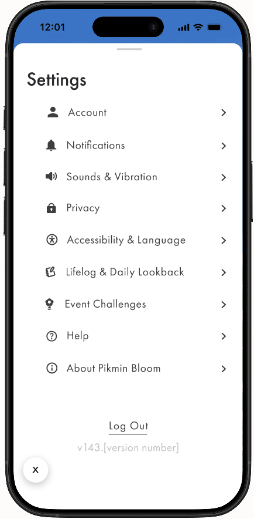

01
Movement Beyond Steps
Allowing the option to replace step-count progression with distance-based tracking, such as miles, allows users who use wheelchairs or mobility aids to have their movement more accurately reflected. This ensures that effort is measured equitably regardless of walking ability.
Original App

Our Redesign
